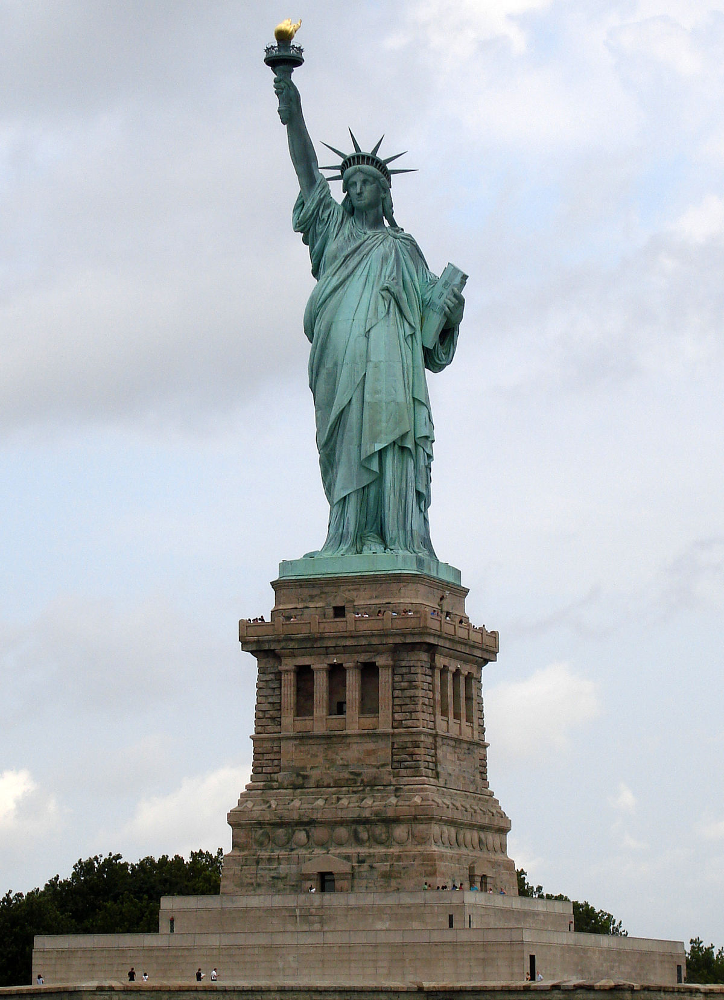
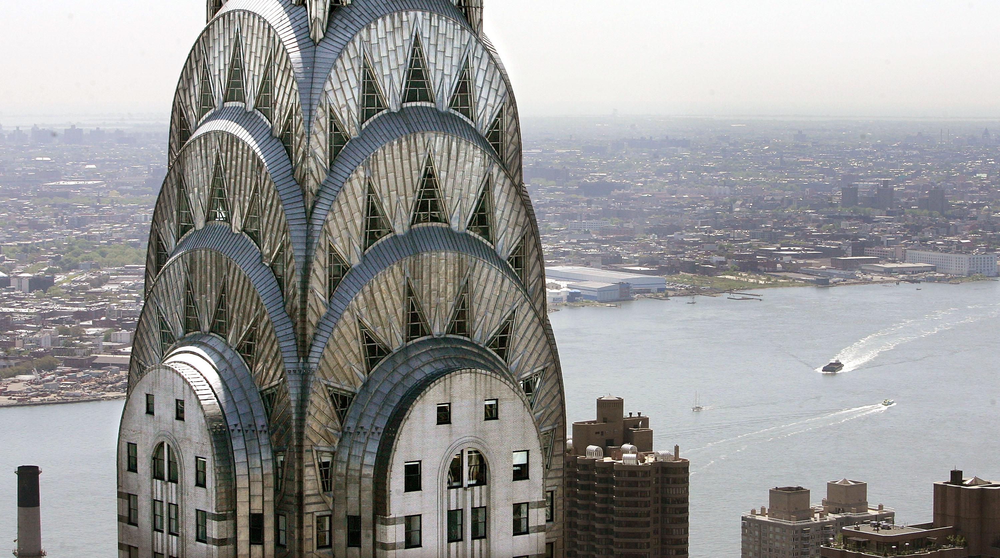
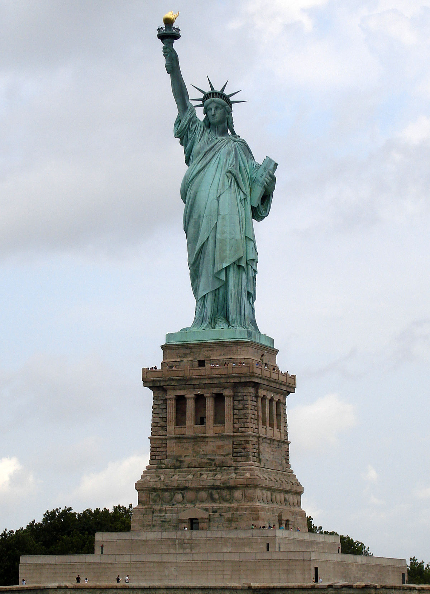
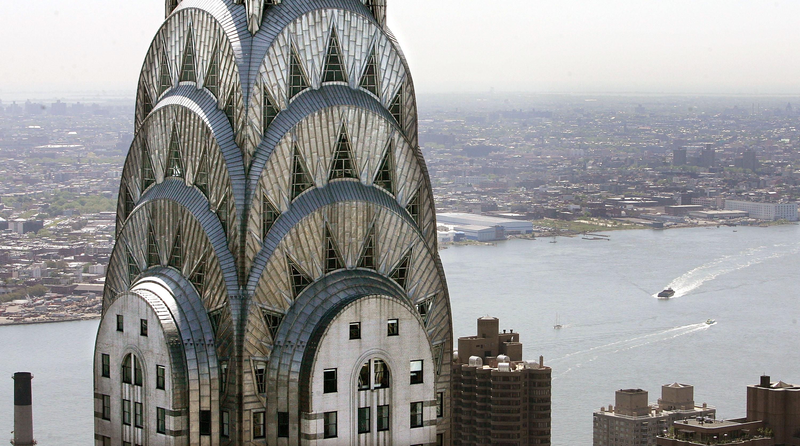
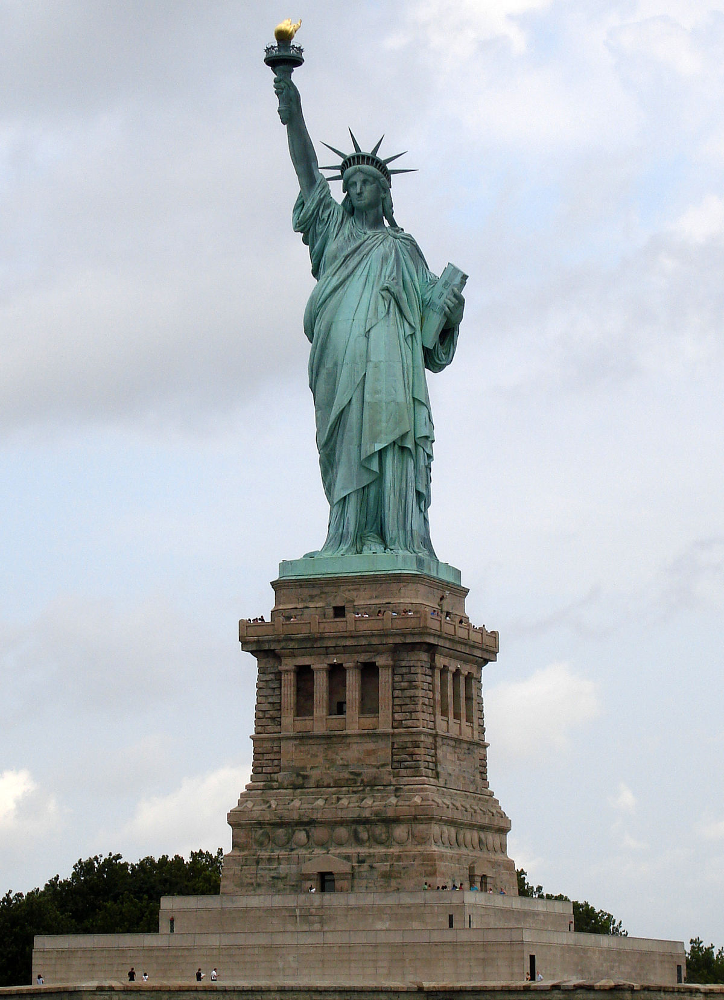
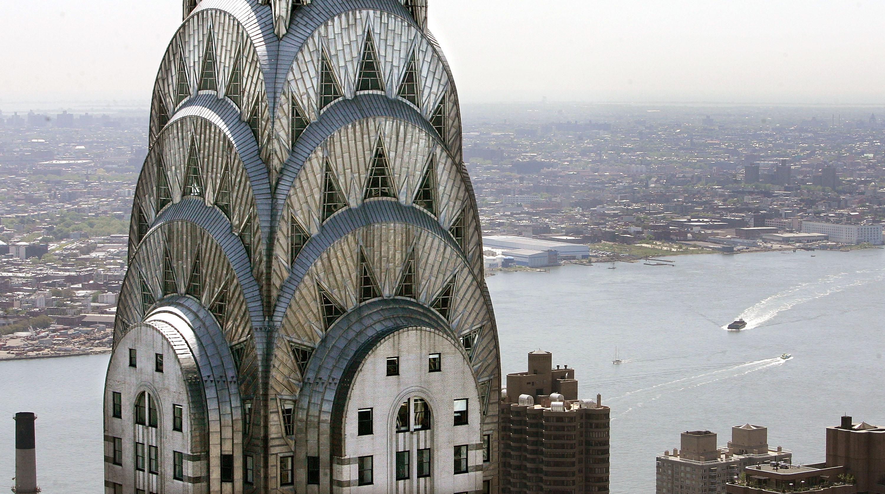

New York is truly an awesome place to go. Its known by many names such as the city that never sleeps,the city of lights, and the city of dreams. The city has many iconic land marks such as the Chrysler building, the statue of liberty, and the empire state building. Time square is a part of New York that I want to vist, just standing their and looking at all of the lights. New York is so amazing that many shows and movies have been filmed there and I really hope that I can cross of my bucket list saying that I went to New York City.

